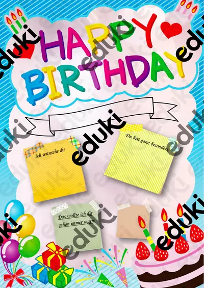
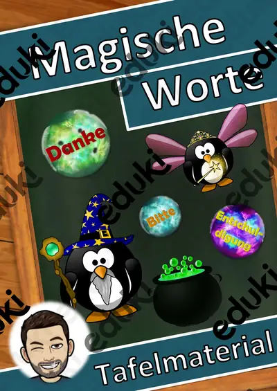

Ostereiersuche im Garten – Rollenspiel Lagewörter und Zählen bis 20, 3-fach differenziert (Klasse 1)

Lesespaziergang DaZ: Wir backen – Wortschatz mit Rätseln, 3-fach differenziert (Klasse 1–4)

Lesespaziergang DaZ: Spielen im Schnee – Wortschatz mit Rätseln, 3-fach differenziert (Klasse 1–4)

Lesespaziergang DaZ: Gemüse – Wortschatz mit Rätseln, 3-fach differenziert (Klasse 1–4)

Lesespaziergang DaZ: Sankt Martin – Wortschatz mit Rätseln, 3-fach differenziert (Klasse 1–4)

Materialpaket Rechenwelten im Winter für die 1. Klasse: 5 Mathe-Rollenspiele, 3-fach differenziert (Adventsmarkt, Plätzchenbäckerei, Wildpark & mehr)

Der Spielzeugladen vor Weihnachten – Rollenspiel Münzen und Scheine bis 20 €, 3-fach differenziert (Klasse 1)

Der Weg durchs Wichteldorf – Rollenspiel Wege, Lagewörter und Schritte zählen, 3-fach differenziert (Klasse 1)

Igel im Laubnest – Klappnest basteln mit Sachtext Winterschlaf, 3-fach differenziert (Tiere im Herbst, Klasse 1/2)

Der Kürbis von innen – Klapp-Kürbis basteln und beschriften, 3-fach differenziert (Halloween/Herbst, Klasse 1/2)

Halloween-Ziehkarten – Präpositionen sichtbar machen: über, vor, neben, auf, 3-fach differenziert (Klasse 1/2, DaZ)

Halloween-Hüpffiguren – 6 Bastelvorlagen mit Federkugel, Steckbrief und Geschichte, 3-fach differenziert (Klasse 1/2)

Halloween-Handpuppen – Bastelvorlage mit Sachtext und Puppentheater, 3-fach differenziert (Klasse 1/2)

Fingerpuppen Wintertiere – Bastelvorlage mit Sachtext und Sprechaufgaben, 3-fach differenziert (Klasse 1/2)

Wimpelkette Winter – Bastelvorlage mit Wintermotiven, Buchstaben WINTER und eigenen Wimpeln, 3-fach differenziert (Klasse 1–4)

Advents-Häuserstadt – Klassen-Adventskalender zum Basteln mit 24 Adventsaufgaben, 3-fach differenziert (Klasse 1–4)

Fensterlaterne Sankt Martin – Laterne basteln mit Lesetext zur Legende, 3-fach differenziert (Klasse 1–3)

Gespensterhaus aus meiner Hand – Halloween-Bastelvorlage mit Lesen und Schreiben, 3-fach differenziert (Klasse 1/2)

Lesespaziergang DaZ: Im Klassenzimmer – Wortschatz mit Rätseln, 3-fach differenziert (Klasse 1–4)

Die Lichterketten-Werkstatt – Rollenspiel Muster und Zahlenfolgen, 3-fach differenziert (Klasse 1)

Die Fensterbild-Werkstatt – Rollenspiel Formen, Muster und Symmetrie, 3-fach differenziert (Klasse 1)

Der Obststand auf dem Adventsmarkt – Rollenspiel Rechnen mit Geld bis 20 €, Rückgeld, 3-fach differenziert (Klasse 1)

Vogelzählung am Futterhaus – Rollenspiel Strichlisten auswerten und vergleichen, 3-fach differenziert (Klasse 1)

Winterfütterung im Wildpark – Rollenspiel Zahlen bis 20 zählen, zerlegen und ergänzen, 3-fach differenziert (Klasse 1)

Winterspiele im Schulhof – Rollenspiel Strichlisten, Vergleichen, sicher – möglich – unmöglich, 3-fach differenziert (Klasse 1)

Die Plätzchenbäckerei – Rollenspiel Zahlen bis 20, Verdoppeln und Halbieren, 3-fach differenziert (Klasse 1)

Am Kürbisstand – Rollenspiel Rechnen mit Geld bis 20 €, 3-fach differenziert (Klasse 1)

Salzteig-Anhänger – formen, trocknen, bemalen – Lesespurgeschichte mit Rätselaufgaben (Klasse 1)

Werkzeuge im Alltag – wie sie uns die Arbeit leichter machen – Lesespurgeschichte mit Rätselaufgaben (Klasse 1)

Das Pausenfrühstück – fit in den Schultag – Lesespurgeschichte mit Rätselaufgaben (Klasse 1)

Wünsche und Bedürfnisse – was ich wirklich brauche – Lesespurgeschichte mit Rätselaufgaben (Klasse 1)

Geheime Zeichen – Bildercodes und Symbole – Lesespurgeschichte mit Rätselaufgaben (Klasse 1)

Sortieren wie ein Computer – der Reihe nach – Lesespurgeschichte mit Rätselaufgaben (Klasse 1)

Anweisungen genau geben – Programmieren ohne Computer – Lesespurgeschichte mit Rätselaufgaben (Klasse 1)

Computer im Alltag – wo überall Computer stecken – Lesespurgeschichte mit Rätselaufgaben (Klasse 1)

Muster fortsetzen – Regeln finden wie ein Computer – Lesespurgeschichte mit Rätselaufgaben (Klasse 1)

Der kleine Bodenroboter – Befehle Schritt für Schritt – Lesespurgeschichte mit Rätselaufgaben (Klasse 1)

Mein Sporttag – Abschluss-Sportfest mit Spielstationen – Lesespurgeschichte mit Rätselaufgaben (Klasse 1)

Bewegungslandschaft – ein Hindernisparcours aus Alltagsdingen – Lesespurgeschichte mit Rätselaufgaben (Klasse 1)

Fang- und Laufspiele – flitzen, ausweichen, abklatschen – Lesespurgeschichte mit Rätselaufgaben (Klasse 1)

Bewegungsbaustelle – bauen, klettern, rutschen, springen – Lesespurgeschichte mit Rätselaufgaben (Klasse 1)

Kleine Spiele auf dem Pausenhof – fangen, hüpfen, mitmachen – Lesespurgeschichte mit Rätselaufgaben (Klasse 1)

Seilspringen – hüpfen, schwingen, im Takt springen – Lesespurgeschichte mit Rätselaufgaben (Klasse 1)

Gleichgewicht – balancieren, wackeln, sicher stehen – Lesespurgeschichte mit Rätselaufgaben (Klasse 1)

Ballspiele – rollen, prellen, werfen, fangen – Lesespurgeschichte mit Rätselaufgaben (Klasse 1)

Fair spielen – gewinnen und verlieren lernen – Lesespurgeschichte mit Rätselaufgaben (Klasse 1)

Schlaflieder – Musik zum Träumen – Lesespurgeschichte mit Rätselaufgaben (Klasse 1)

Karneval der Tiere – Musik aus dem Zoo – Lesespurgeschichte mit Rätselaufgaben (Klasse 1)

Kinderlieder und Spiellieder – Singen macht Spaß – Lesespurgeschichte mit Rätselaufgaben (Klasse 1)

Ohren auf! – Laute und leise Orte – Lesespurgeschichte mit Rätselaufgaben (Klasse 1)

Winterklänge – Musik im Schnee – Lesespurgeschichte mit Rätselaufgaben (Klasse 1)

Instrumente selbst bauen – Musik aus Dose und Karton – Lesespurgeschichte mit Rätselaufgaben (Klasse 1)

Eine Klanggeschichte – Musik erzählt vom Wald – Lesespurgeschichte mit Rätselaufgaben (Klasse 1)

Bodypercussion – Musik mit dem Körper – Lesespurgeschichte mit Rätselaufgaben (Klasse 1)

Laut und leise, hoch und tief – Lesespurgeschichte mit Rätselaufgaben (Klasse 1)

Formen in der Natur – Lesespurgeschichte mit Rätselaufgaben (Klasse 1)

Tiere in der Kunst – Lesespurgeschichte mit Rätselaufgaben (Klasse 1)

Wolken, Wind und Wetter malen – Lesespurgeschichte mit Rätselaufgaben (Klasse 1)

Muster entdecken – Streifen, Punkte, Flecken – Lesespurgeschichte mit Rätselaufgaben (Klasse 1)

Punkt, Linie, Fläche – die Bausteine jedes Bildes – Lesespurgeschichte mit Rätselaufgaben (Klasse 1)

Blätterdruck und Herbstfarben – Lesespurgeschichte mit Rätselaufgaben (Klasse 1)

Stopp sagen und Hilfe holen – Grenzen erkennen – Lesespurgeschichte mit Rätselaufgaben (Klasse 1)

Rituale im Alltag – was uns jeden Tag begleitet – Lesespurgeschichte mit Rätselaufgaben (Klasse 1)

Wir helfen einander – Lesespurgeschichte mit Rätselaufgaben (Klasse 1)

Fair teilen und abgeben – Lesespurgeschichte mit Rätselaufgaben (Klasse 1)

Zusammen in der Klasse – Lesespurgeschichte mit Rätselaufgaben (Klasse 1)

Artikel im Rucksack: der, die, das mit Farbcode – Bastel-Rucksack, 24 Schulsachen, Hörübungen (DaZ, Klasse 1)

Auf einen Blick! Mengen bis 10 blitzschnell erkennen – Miniheft Mathematik Klasse 1

Herbst-Forscher-Kamera – Papier-Kamera zum Laminieren mit Foto-Aufträgen und Fotoalbum, 3-fach differenziert (Klasse 1/2)

Halloween Taschenlampen-Rätsel „Was steckt im Glas?“ – Sätze mit ein/eine schreiben, 3-fach differenziert (Klasse 1/2)

Jesus wird geboren – die Weihnachtsgeschichte nach Lukas mit Bildgeschichte, 3-fach differenziert (Religion Klasse 1/2)

Gemeinschaftsposter Winter „Gemeinsam leuchten wir“ – Klassenposter aus 24 Teilen, 3-fach differenziert (Klasse 1–4)

Zahlen 1 bis 20 – je Zahl eine Übungsseite: schreiben, Zehnerfeld, zählen, suchen, Nachbarzahlen, schneiden und kleben (Klasse 1, 3-fach differenziert)

Mein Halloween-Mitmachheft – Rätseln, zählen, lesen, schreiben, 3-fach differenziert (Klasse 1–2)

Ausmalbild Schulliebe - Ich liebe Schule

Oster-Ausmalbilder, Ausmalbilder für Ostern - Klassenzimmergestaltung

Ausmalbild Silvester - Kunst Ausmalbilder Neujahr - Ferien #Glückspilze24 #Glückskekse25 #edukiknaller24

Sternbilder Projektion - Materialpaket - Sternbildsucher #edukiknaller2021

Abstrakte Winterbilder - Winter-Bilder zum Ausmalen - Winterkunst - Klassenzimmerdekoration - Fensterbilder - Ausmalbilder

Winter-Schneeflocken - Kunst - Klassenzimmergestaltung - Ausmalbilder

Sternbildsucher - Projektor Sternzeichen Wassermann

Sternbildsucher - Projektor Sternzeichen Fische

Du brauchst - Schulmaterial - Karten zur Visualisierung - Arbeitsplatzorganisation

Aritmética y pintura (castillo) - (Español)

Erster Schultag - Schultasche

Erster Schultag - Schulanfang

Malen und rechnen, rechnen und malen ZR 20 - Homeschooling

Homeschooling Materialpaket (auch Homeschooling) Coronavirus (wachsend) - Materialpaket

Materialpaket Coronavirus

Ergänzungsset zum Coronavirus Arbeitsblatt - Materialpaket

Labyrinth: Biene zu Honig - ein Spiel auch für Zuhause

Materialpaket Ostern Karwoche Ostergeschichte (groß) (auch Homeschooling)

Poster: Ostergeschichte Ostern, Karwoche, Ostern

Gemüse - Merk es dir!

Coronavirus Materialpaket (light)

Hände waschen - Homeschooling - Coronavirus

Geometrische Flächen

Glückwünsche zum Geburtstag

Magische Worte Tafelmaterial

Kunst Ostereier zum Bemalen (auch Vertretung)
Keine Materialien gefunden – versuch einen anderen Suchbegriff oder Filter.